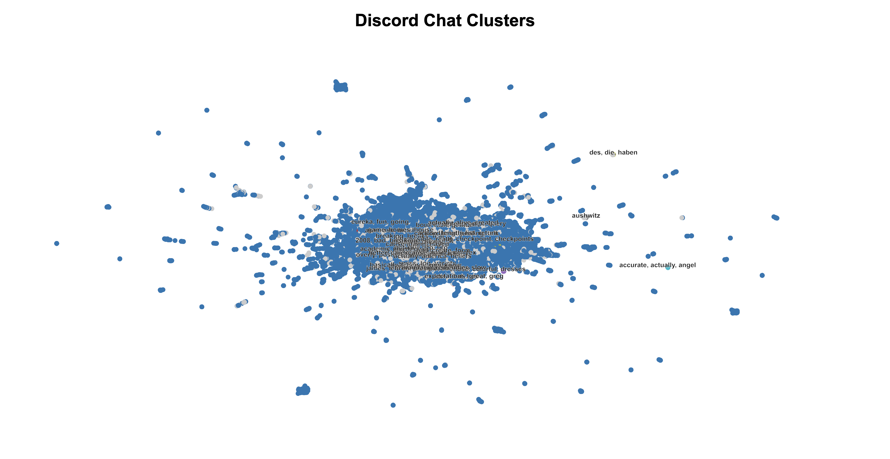
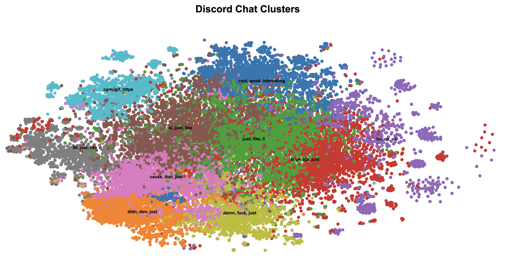
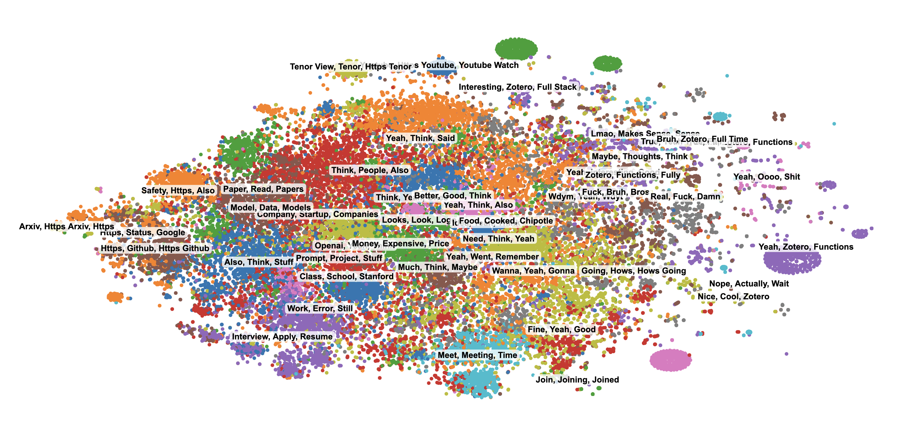
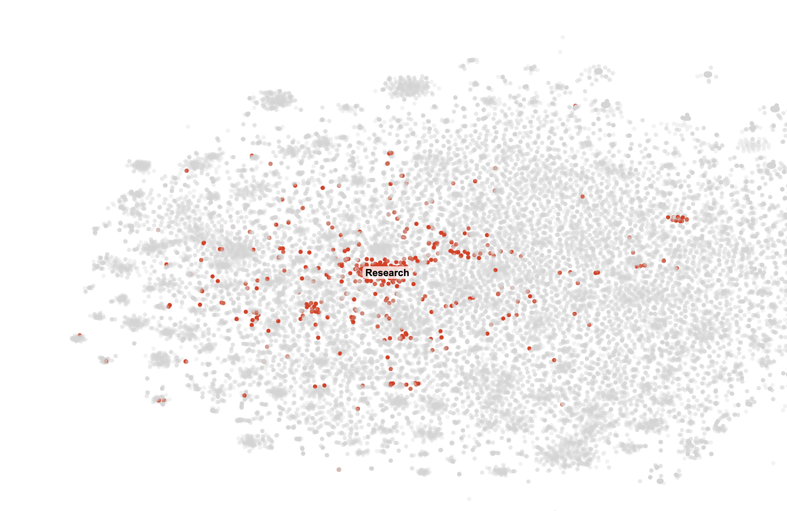
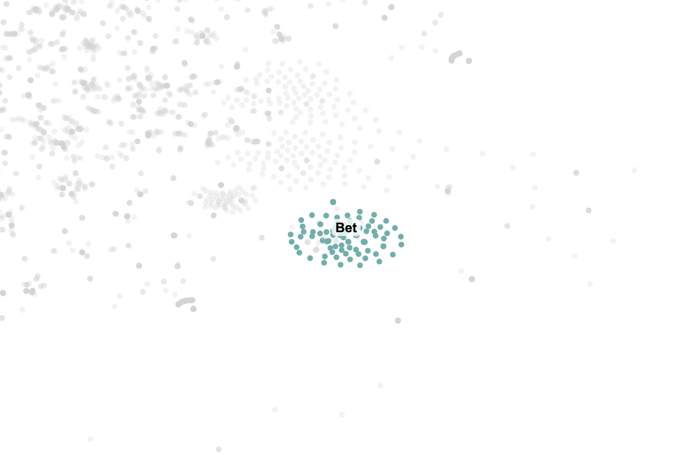
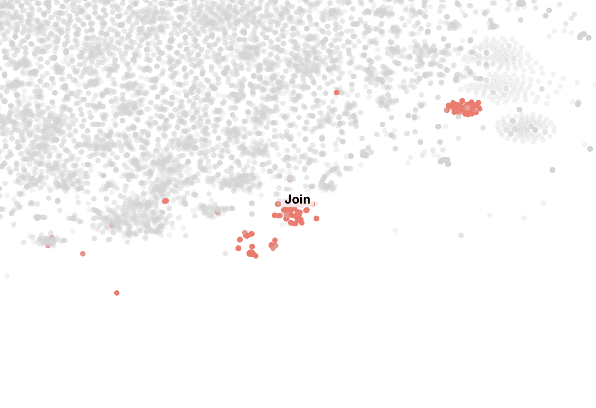

My friend and I have been chatting on Discord almost daily since high school. Over the years, we've exchanged about 48,000 messages. I started wondering what kinds of things we've talked about most and whether there were any patterns in our conversations. This post covers how I downloaded, processed, and visualized our entire chat history.
Exporting the Chat History
To start, I needed a way to export our messages from Discord. I looked into their API but didn't find an easy solution. Eventually, I discovered DiscordChatExporter, an open-source tool that allowed me to download all our chat history into 47 JSON files containing around 45,000 messages. It worked perfectly.
Generating Message Embeddings
Once I had the data, I needed a way to represent each message
numerically. I decided to use BERT embeddings from the
sentence_transformers library. Each message was
converted into a 768-dimensional vector, capturing its
semantic meaning. Here's the code I used:
def generate_bert_embeddings(df):
"""Generate or load BERT embeddings."""
embeddings_file = 'bert_embeddings.pkl'
if os.path.exists(embeddings_file):
print("Loading BERT embeddings from cache...")
with open(embeddings_file, 'rb') as f:
embeddings = pickle.load(f)
else:
print("Generating BERT embeddings using SentenceTransformer...")
model = SentenceTransformer('bert-base-nli-mean-tokens')
embeddings = model.encode(tqdm(df['content'].tolist(), desc="Encoding with BERT"), show_progress_bar=True)
with open(embeddings_file, 'wb') as f:
pickle.dump(embeddings, f)
print("BERT embeddings cached.")
return np.asarray(embeddings)
Initial Clustering Attempts
To find patterns in our chats, I used clustering algorithms. My first attempt was with HDBScan, a clustering algorithm that's good for noisy data. To visualize the high-dimensional embeddings (768 dimensions), I reduced them to two dimensions using UMAP. The results, however, were disappointing:
The clusters lacked meaningful structure, so I decided to try something else.
Switching to K-Means and t-SNE
Next, I tried K-Means, a simpler and more deterministic clustering algorithm. The algorithm works by:
- Randomly initializing K cluster centers.
- Assigning each point to the nearest cluster center.
- Recalculating the cluster centers based on the assignments.
- Repeating steps 2 and 3 until convergence.
For dimensionality reduction, I replaced UMAP with t-SNE, which preserves local relationships in the data. The combination of t-SNE and K-Means produced much better results:
Moving to Gaussian Mixture Models (GMM)
Although K-Means improved the clusters, it assumes that each cluster is spherical, which isn't ideal for real-world data. To address this, I switched to Gaussian Mixture Models (GMMs). GMMs treat each cluster as a Gaussian distribution and use a probabilistic approach to assign points to clusters.
Mathematically, GMMs model the data as:
$$P(X_i) = \sum_{k=1}^K \pi_k \cdot \mathcal{N}(X_i | \mu_k, \Sigma_k)$$Where:
- \(\pi_k\): Weight of the \(k\)-th cluster.
- \(\mu_k\): Mean of the \(k\)-th cluster.
- \(\Sigma_k\): Covariance matrix of the \(k\)-th cluster.
To optimize these parameters, GMMs use the Expectation-Maximization (EM) algorithm:
- E-step: Estimate the probability of each point belonging to each cluster.
- M-step: Update \(\pi_k\), \(\mu_k\), and \(\Sigma_k\) to maximize the likelihood.
def cluster_documents_gmm(tfidf_matrix, n_components=100, max_iter=100, tol=1e-4):
"""Cluster documents using Gaussian Mixture Models."""
X = tfidf_matrix.toarray()
kmeans = KMeans(n_clusters=n_components, random_state=42).fit(X)
means = kmeans.cluster_centers_
covariances = np.var(X, axis=0) + 1e-6
weights = np.full(n_components, 1 / n_components)
log_likelihood = 0
for iteration in range(max_iter):
# E-step
log_prob = np.zeros((n_samples, n_components))
for k in range(n_components):
diff = X - means[k]
exponent = -0.5 * np.sum((diff ** 2) / covariances, axis=1)
log_prob[:, k] = np.log(weights[k] + 1e-10) - 0.5 * np.sum(np.log(2 * np.pi * covariances)) + exponent
log_prob_norm = logsumexp(log_prob, axis=1)
responsibilities = np.exp(log_prob - log_prob_norm[:, np.newaxis])
# M-step
Nk = responsibilities.sum(axis=0)
weights = Nk / n_samples
means = (responsibilities.T @ X) / Nk[:, np.newaxis]
covariances = (responsibilities.T @ (X ** 2)) / Nk - means ** 2
covariances = np.maximum(covariances, 1e-6)
# Check for convergence
new_log_likelihood = np.sum(log_prob_norm)
if np.abs(new_log_likelihood - log_likelihood) < tol:
break
log_likelihood = new_log_likelihood
labels = np.argmax(responsibilities, axis=1)
return labels
The results with GMMs were the best so far, with more distinct and meaningful clusters:
Rendering Thousands of Points
To show all the messages at once, I needed a frontend that wouldn't slow down with tens of thousands of points. I used an HTML canvas and a bit of D3 for zooming and panning. Canvas is more efficient than creating individual SVG elements, so it runs smoothly even at this scale. I also created a color palette, then used interpolation to expand it to more clusters. After that, I wrote a small seeded random function to shuffle the color list, so clusters that are similar don't get placed next to each other. I also added a highlight feature: clicking on a point dims all the other clusters, making it easier to focus on that one cluster alone. Finally, I added hover tooltips to show each message's text, author, and timestamp. This setup made it simple to explore the entire history without lag.
Here's a small snippet from script.js that shows
how I set up the canvas and draw each point. I'm redrawing
everything on every zoom or pan event, which might sound
expensive, but in practice it performs well. Because I'm
using canvas, drawing tens of thousands of points remains
responsive.
const width = window.innerWidth;
const height = 800;
const pixelRatio = window.devicePixelRatio || 1;
const canvas = document.getElementById("chart");
canvas.width = width * pixelRatio;
canvas.height = height * pixelRatio;
canvas.style.width = width + "px";
canvas.style.height = height + "px";
const context = canvas.getContext("2d");
context.scale(pixelRatio, pixelRatio);
function drawPoints(data, transform) {
context.save();
context.clearRect(0, 0, width, height);
context.translate(transform.x, transform.y);
context.scale(transform.k, transform.k);
data.forEach(d => {
context.beginPath();
context.arc(xScale(d.x), yScale(d.y), 3 / transform.k, 0, 2 * Math.PI);
context.fillStyle = getColorForCluster(d.cluster_label);
context.fill();
});
context.restore();
}
// Called inside a zoom handler:
d3.select(canvas).call(d3.zoom().on("zoom", event => {
drawPoints(myData, event.transform);
}));
In this example, xScale and yScale
are standard D3 linear scales, and
getColorForCluster returns a color based on
cluster label. I also have a tooltip system that listens for
mouse events on the canvas to figure out which point I'm
hovering over. This way, I can click to highlight a cluster,
zoom in to examine smaller groups, and explore all the
messages with ease.
Cluster Highlights
With the canvas working, I had a lot of fun going through all the clusters. Some were straightforward, like the "Research" which contained all our messages about research. Some other clusters that caught my eye were "Bet," which I guess was a message we sent so frequently that it formed it's own cluster, and "Join", which just contained messages from my friend telling me to join our weekly calls over and over.
  Conclusion
This project was a great way to revisit years of conversations with a friend and explore clustering techniques. While the results aren't perfect, they reveal clear patterns in our topics. All the code is available on GitHub. There's still room for improvement, but this was a fun start.